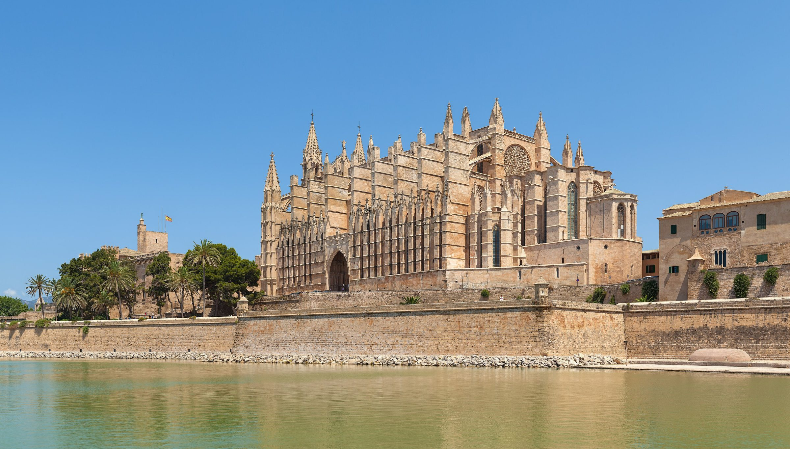
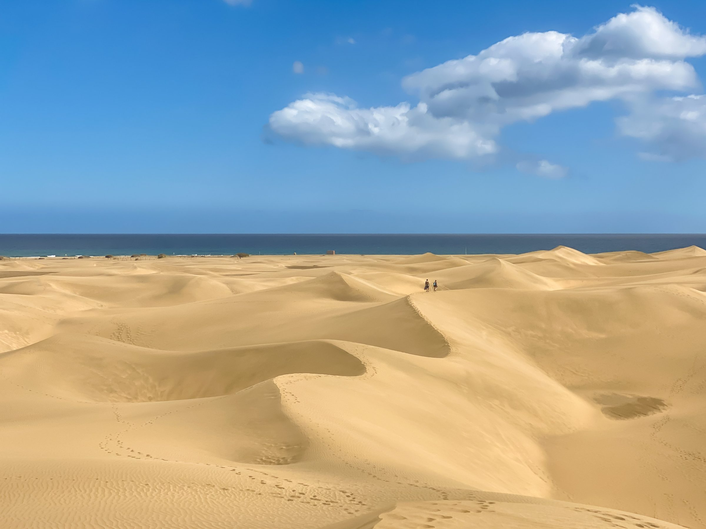
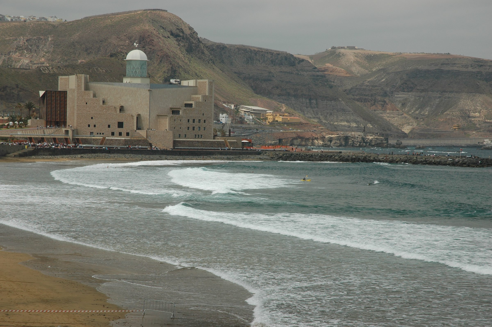
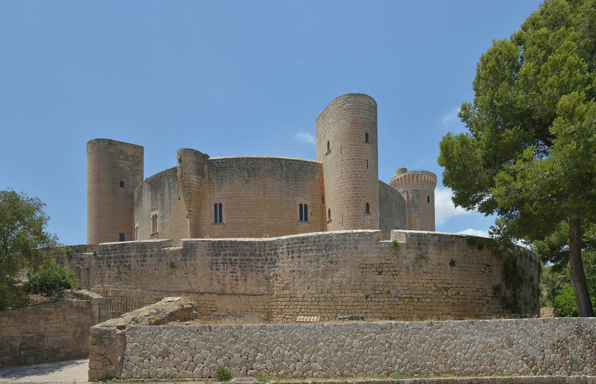
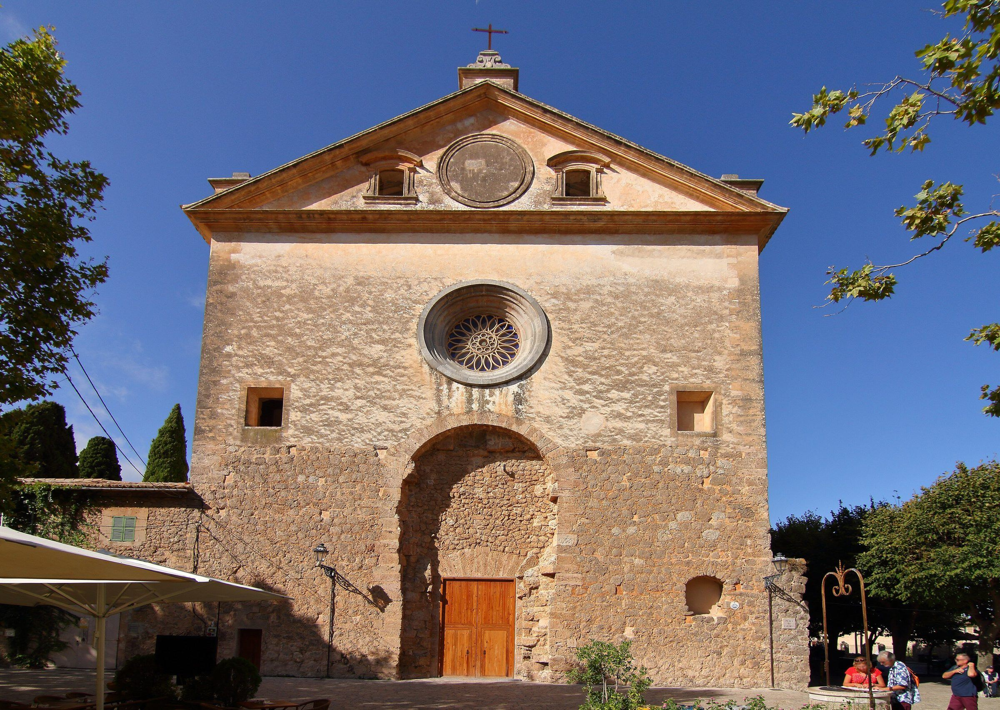
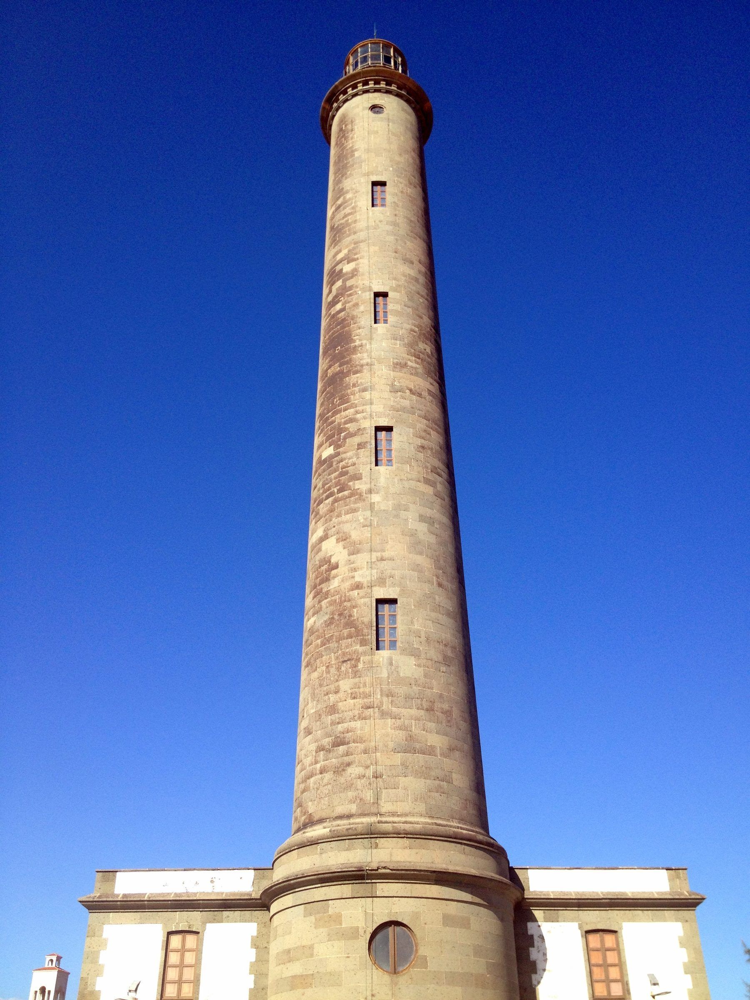
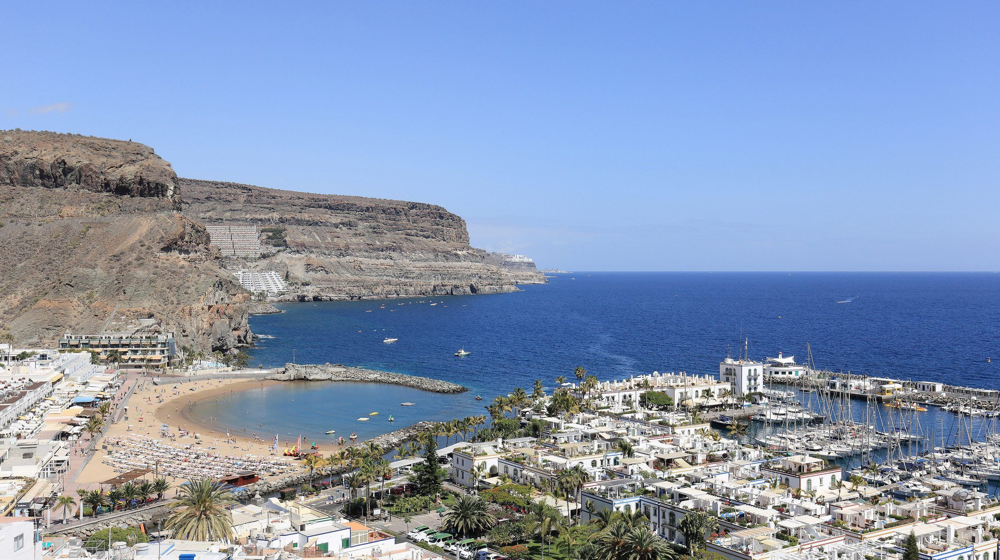
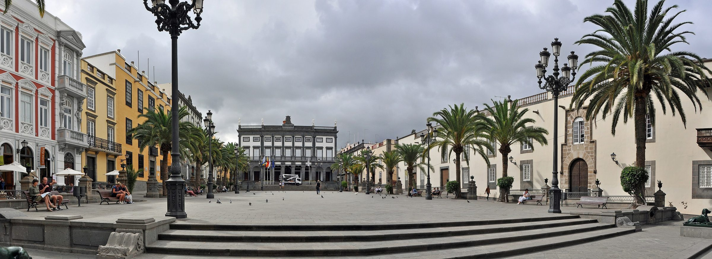
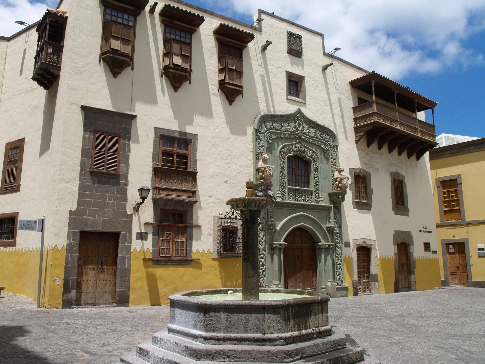

Palma
€273
€311
€624
The easy, cheaper short break. Nonstops in, and nonstops back for 2 or 3 nights.



January 2027
Which island should we disappear to?
A love letter with plane tickets. Three islands, a handful of nights, and the place that feels most like us.
Ali flies from Asturias (OVD — Avilés on Google Flights). She flies from Hannover (HAJ). They meet on the island, then fly home to Asturias together. Her later flight to Frankfurt is a separate chapter, and it is not in these totals. This is a private page for two people. It does not take bookings.
Tap the one that makes you smile. Photographs are from Wikimedia Commons, various seasons — not a promise of January weather.
A few pictures to hold in mind, then what January is actually like.


Daytime highs around 15 to 16°C. Sea around 14 to 15°C. About six rainy days a month. About 9.5 hours of daylight. Jacket, layers, a rain shell. The city stays lively; the mountains are colder and wetter. Climate averages, not a 2027 forecast.


Around 20 to 21°C by day, cooler evenings, sea about 19°C. About three rainy days, 27 mm. About 10 to 11 hours of daylight. The south is generally sunnier than Las Palmas. Beach time possible, not guaranteed. Swimming can feel cold.


Daytime highs around 19 to 20°C. Sea about 19°C. Roughly four rainy days. The north can be cloudier than the south. Never “no beach”: Las Canteras is in the city.
Clock times are Europe/Madrid (UTC+1). Gran Canaria local clocks are one hour behind; booking sites usually show their own local times. 6 January is Epiphany.
She arrives first. Ali lands 13:15 Madrid time. Meet, ride the A1 into Palma, wander the old lanes, sit by Parc de la Mar, find an easy dinner. The cathedral is for looking at from outside tonight — it is Epiphany.
Inside La Seu at last, the little Arab Baths if they are open, then the slow lanes. Es Baluard if you still want art.
Bellver in the morning, or Es Baluard if the sky turns. A1 to the airport. Nonstop home 19:05 to 20:45.
She arrives first. Ali lands 13:15. A1 into Palma. Lanes, Parc de la Mar, dinner. Cathedral from the outside only — Epiphany.
La Seu interior, Arab Baths if open, slow lanes. Es Baluard optional.
If the day is clear, TIB 203 to Valldemossa (we will not assume the monastery interior). Or stay in Palma for Bellver. Pack tonight: Saturday’s flight is very early.
No sightseeing. The €18 pair nonstop leaves 06:30 and lands 08:15. A taxi may be needed; it is not in the budget.
Arrive and exhale. Cathedral from the outside only — Epiphany.
La Seu interior, and the Arab Baths if they are open.
Valldemossa on TIB 203.
Sóller and the port on TIB 204. The vintage Palma to Sóller train is closed, so we go by bus.
Bellver Castle among the pines.
Cala Major or Portixol. Bellver and Es Baluard are closed Mondays.
Drach only if January transport works; otherwise Es Baluard. Adult admission at Drach recently €18.50 each, extra to totals, tickets up to 30 days ahead.
Home via Valencia, a €65 self-transfer. No sightseeing committed.
Arrive on the TUI nonstop. Walk to the lighthouse and along Meloneras while the light goes gold.
Dunes and beach. Epiphany, so stay outdoors.
Mogán if the return still fits, then the overnight Iberia at 22:50, Asturias 08:40 Friday 8.
Arrive. The lighthouse first.
Dunes. Epiphany outdoors.
Mogán, or swap the day for Las Palmas culture.
Keep the day free until the flight is chosen: €189 self-transfer, or Binter nonstop was €512.
Settle. Nowhere to be but here.
Dunes. Epiphany outdoors.
Las Palmas culture. Casa de Colón is open again after Epiphany.
Puerto de Mogán, coloured houses and a sheltered beach.
Optional Roque Nublo if reserved and the weather is good. A rocky uphill hike, not a flat stroll.
A no-checklist beach day.
Last coast, or Fataga if the buses work.
Home. €101 self-transfer, or €136 same-day Iberia.
Meet. Las Canteras first evening, the city beach at the end of the street.
Epiphany outdoors: Canteras, Parque Doramas exteriors. Casa de Colón is closed.
Vegueta and one museum, then the overnight flight at 22:50.
Las Canteras. Walk until the auditorium.
A holiday by the sea. Epiphany. Casa de Colón closed.
Old town and museums.
Return day. Choose the flight first.
Las Canteras, the long first evening.
Beach holiday. Epiphany outdoors.
Vegueta and Casa de Colón.
Maspalomas dunes as a day trip on Global 30.
Museo Canario.
Parque Doramas and Pueblo Canario. Sunday folklore not assumed — verify the January programme.
Flexible city and beach. Roque Nublo only if it replaces a clear-weather day with a proper reservation and bus chain.
Home.
A simple total for two: both inbound flights, a private room, and home to Asturias. The length you tapped above changes the numbers.
€273
€311
€624
The easy, cheaper short break. Nonstops in, and nonstops back for 2 or 3 nights.
€440
€587
€891
Dunes on the doorstep. Dearer, especially for 2 and 3 nights.
€276
Still to price
Still to price
City and a real beach. Cheapest 2-night private room in this snapshot. 3 and 7 nights not yet priced.
Mallorca uses the €91 nonstop inbound pair. Gran Canaria uses the €83 cheapest inbound; add €27 if she takes the TUI nonstop. Totals are inbound pair plus the cheapest private room for two plus island to Asturias. Food, buses, airport transfers, tickets, bags, insurance, connection-night hotels and her later Frankfurt ticket are not included.
Mallorca still wins on money and easy nonstops for a short break. The Palma week is now dearer than the old hotel quote. Gran Canaria wins if the point is escaping winter. Las Palmas is the city-and-beach alternative. Maspalomas puts the dunes and the sunnier south on the doorstep.
Lowest complete estimates. Nonstop inbound for both. Nonstop back for 2 or 3 nights. A walkable city, with village days by bus.
Jacket weather and a cold sea. The Sóller vintage train is closed. 9 January is a very early start. The week return is a self-transfer.
Dunes, lighthouse and the sunnier south on the doorstep. Beach days are plausible in January, not guaranteed.
Returns are messy: overnight via Madrid, a dear Binter, or a self-transfer. Culture is a bus day to Las Palmas. Hotels are higher than the old quotes, especially for 2 and 3 nights.
A real city beach. Cheapest 2-night private room in this snapshot (€80). Museums and ordinary city life on foot and bus.
Cloudier and cooler than the south. Dunes are a day trip. 3-night and 7-night hotel prices unknown.
Fares, rooms, buses and the small print, folded away until you want them. Snapshots from 8 November 2026.
Google Flights snapshot, Sunday 8 November 2026, Madrid time. Economy, taxes included, bags extra. Inbound is 1 adult. Island to Asturias is the total for 2 adults. Self-transfers are separate tickets: a delay can mean buying a new onward flight.
| Route | What | Fare |
|---|---|---|
| HAJ to PMI | Eurowings nonstop, 06:10 to 08:40 (was quoted €60) | €45 |
| OVD to PMI | Volotea nonstop, 11:35 to 13:15 (was €36) | €46 |
| OVD to PMI cheapest | Wizz overnight self-transfer via Valencia. Not used in totals. | €39 |
| Nonstop pair used | Both nonstops above | €91 |
| Route | What | Fare |
|---|---|---|
| HAJ to LPA cheapest | 18h 35m Eurowings plus Vueling self-transfer via Málaga | €64 |
| HAJ to LPA nicer | TUI fly nonstop 08:05 to 12:10 (08:05 to 13:10 Madrid time). Day plans assume this. | €91 |
| OVD to LPA | Volotea nonstop 06:40 to 08:45 (06:40 to 09:45 Madrid time) | €19 |
| Cheapest combo used | €83. €110 if she takes TUI (add €27 to every Gran Canaria estimate) | €83 |
| Date | What | Fare |
|---|---|---|
| PMI to OVD, 8 Jan | Vueling/Iberia nonstop, 19:05 to 20:45 | €48 |
| PMI to OVD, 9 Jan | Vueling/Iberia nonstop, 06:30 to 08:15. Very early start. | €18 |
| PMI to OVD, 13 Jan | No nonstop. Wizz self-transfer via Valencia | €65 |
| LPA to OVD, 7 Jan | No nonstop. Iberia via Madrid overnight, 22:50 to 08:40+1 Madrid time. Travel night extra to two hotel nights. | €113 |
| LPA to OVD, 8 Jan cheapest | Self-transfer via Madrid. Binter nonstop about 15:30 to 18:40 was €512 | €189 |
| LPA to OVD, 12 Jan | Iberia Express plus Wizz self-transfer via Madrid. Sevilla-style about €121. Same-day Iberia via Madrid €136 | €101 |
| Date | What | Fare |
|---|---|---|
| 13 Jan | Air Europa via Madrid, overnight 21:05 to 09:45+1 | €60 |
| 14 Jan | Air Europa via Madrid, 10:35 to 17:55 | €60 |
A separate chapter after the island. Not folded into Palma or Gran Canaria totals.
Booking.com, Sunday 8 November 2026, Europe/Madrid. 2 adults, 1 room, review score 8+, taxes and fees included, sorted by price. Headline figures are the cheapest private room suitable for two — not hostel dorms, and not a Palma camper-van tent. Some Palma and Las Palmas prices are Booking member / Genius rates.
Cheaper cards on the same search were shared dorms (We Hostel Palma €80 / €128 / €296 member; El Josemari Hostel dorm €103 / €156 / €360) and a tent. They are not this couple’s hotel total. Older Palma quotes were €140 / €221 / €389. Short stays are similar; the week is now higher.
A like-for-like 3-night Maspalomas with Binter nonstop back becomes €910 (cheap inbound) or €937 (her TUI).
Sights and buses from notes checked 8 November 2026. Fares and holiday timetables still need a last look before you go.
La Seu
Plan the interior for Thursday 7 January. Closed to tourist visits on Epiphany and Sundays.
Arab Baths
Small Moorish bath and garden near the cathedral.
Bellver Castle
Circular Gothic castle and city-history museum. Closed Mondays. Uphill.
Es Baluard
Contemporary art, typically Tuesday to Sunday, closed Mondays.
Drach caves
Winter tours. Adult admission recently €18.50 each, extra to totals.
Cala Major
Simple city-bus coastal walk, not a January swim guarantee.
Airport to Palma
EMT A1 to Plaça d’Espanya / intermodal. Check current fare and holiday timetable.
Valldemossa
TIB 203.
Sóller
TIB 204 to Sóller and Port de Sóller. The vintage Palma to Sóller train is closed 23 November 2026 to 1 February 2027. Go by bus. The separate Sóller to port tram published a closure through 22 December 2026; confirm January service. Not included in the TIB bus fare.
Dunes and lighthouse
Protected reserve. Marked routes only.
Playa del Inglés and Meloneras
Relaxed beach and promenade day.
Puerto de Mogán
Harbour, lanes, sheltered beach.
Las Palmas culture
Vegueta. Casa de Colón closed 6 January.
Roque Nublo
Advance slot required. Weather dependent.
Airport to the south
Global 66 / 90 to Faro de Maspalomas. Operator quotes about 40 minutes and €4.05 per adult (€8.10 one way for both, outside totals).
Coast
Global buses to Puerto de Mogán.
Las Palmas
Global 30, about an hour plus. Not a guaranteed 50 minutes door to dunes.
Roque Nublo
Global 18 toward the rock. Limited through services. Plan the return.
Catedral and Plaza de Santa Ana
The old-town square in Vegueta.
Casa de Colón
Closed 6 January.
Museo Canario
In the Vegueta cluster.
Triana
Walkable shopping streets between the old town and the port.
Las Canteras
Promenade of more than 3 km, Alfredo Kraus exterior.
Parque Doramas
Pueblo Canario beside it. Sunday folklore not assumed.
South dunes
A day trip on Global 30, not outside the hotel.
Airport
Global 60 / 91. About 20 minutes / €2.30 to San Telmo (Triana / Vegueta) or about 30 minutes / €2.95 to Santa Catalina (Las Canteras).
In the city
Two walkable clusters: Vegueta to Triana, and Las Canteras to Santa Catalina. Yellow city Guaguas between them.
Photographs, Wikimedia Commons. Licensed as marked. Not January 2027 weather.
Sources used for hours, buses and fares, checked 8 November 2026.


.jpg){kind=link}